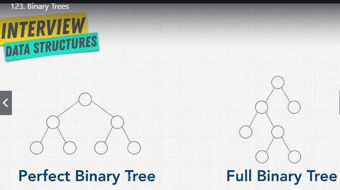
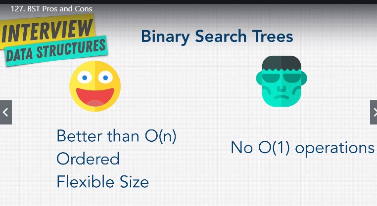

Linked lists are a type of trees - single linked lists - just the parent will point to the child, not the other way around
the structure of html is organized like a tree doc -> head -> title
Different types of trees
Binary trees
each node can have max 2 children
each child can have just 1 parent
in a perfect binary tree each node has either 2 or 0 children - has no gaps
the number of nodes doubles on each level => is easy to check how many nodes we have on each level -> level n ^ 2
to calculate the total number of nodes is also easy = 2^height -1 => log nodes = height (the number of steps we need to do to make a decision - divide and conquer - the phone book search) => (explanation of log => log 100 = 2 because 10^2 = 100)
O(log n) time complexity is a lot faster than O(n) - we don't need to pass through each node - is what Google uses for its search algorithm
the number of nodes on the last level is = with the sum of the nodes above it + 1 => half of the data is on the last level
a full binary tree has gaps - the bottom can still be completed

Binary search tree
all the nodes on the right are bigger than the parent node - on the left decreases => easy to decide which way to go when looking for a node
balanced vs unbalanced binary search trees - for the 2 one all the nodes are on one side and the tree becomes a linked list - and the operations to perform on it cost O(n) as we need to go through all the nodes since there are no bifurcations
pros and cons of Binary search trees, WHEN BALANCED

are looking like a binary search tree, but the order of the nodes is different - the parent nodes are bigger( binary max-heap)/smaller( binary min heap) than the children nodes - the left and right does not have a logic anymore
it has left to right insertion
it has slow lookups as if the number is lower than the root you need to check all the other nodes underneath since the left or right logic is no more a rule
are used to implement the priority queues, as the parent node will be the one with priority over the lower nodes
perfect for finding mins or max
tries
types of trees used to store especially strings - very efficient lookups(O(length of the word))